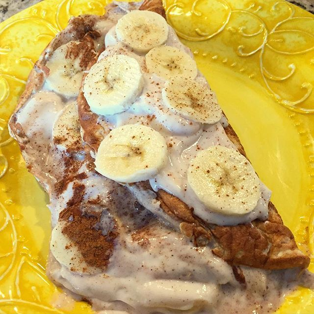

Egg Omlette filled with (not only) Protein Powder

An Egg Omelette bombed with 40 grams of protein and sweet fruits of your choice
A delicous way to spice up your mundane eggs with a little sweetness, some fibre, and tons of muscle building protein
--------------------------------------------------------------------------------------------------------------------------------------------------------------------------------------------
Ingredient list
- 3 eggs
- 20 grams of protein powder
- 125 grams of zero fat greek yogurt or skyr yogurt
- 1/2 tea spoon of baking powder
- Cinammon powder
- Fruit of choice, preferrably soft ones (bananas, berriess etc.)
- *Artifical sweetener
--------------------------------------------------------------------------------------------------------------------------------------------------------------------------------------------
Steps
- In a bowl, mix 10 grams of protein powder with 75 grams of yogurt of choice
- Creack 3 eggs into the mix and stir it up until everything is well mixed together
- Mix in the cinammon and baking powder
- Pour the mixture onto a hot pan on a low heat
- While you wait mix the rest of the protein powder and yogurt together>
- Cut up your fruits
- Check up on your omelette from time to time and when it's time, flip it to the other side
- Once the omelette is done take it off the pan
- Coat it with the yogurt-protein cream and add your fruits
Back to Homepage